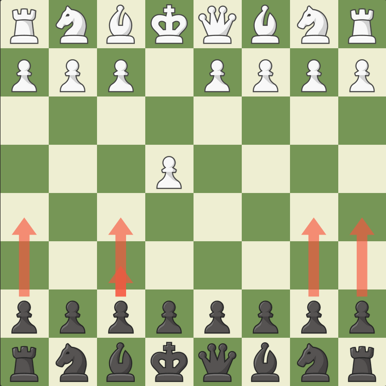
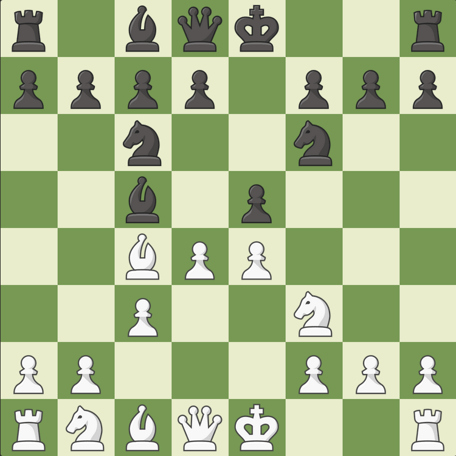
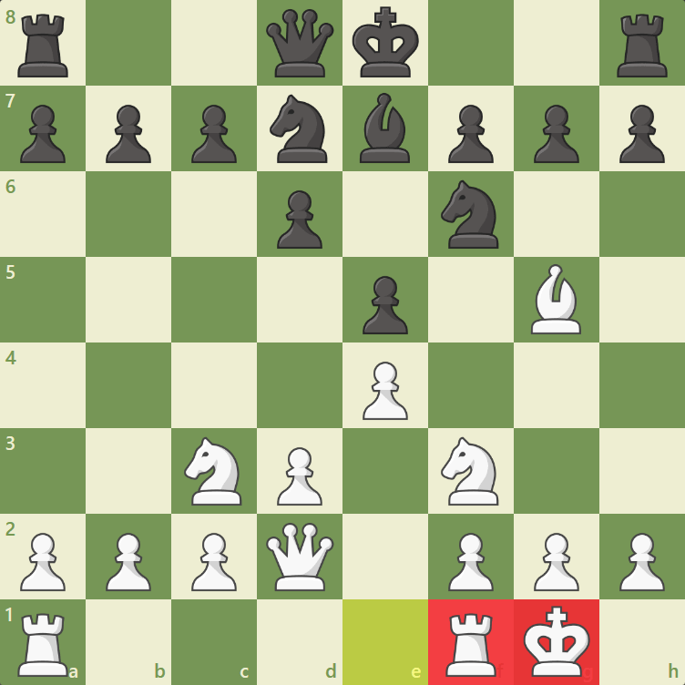

Opening Basics
Learn the foundational principles of chess openings:
- Control the center: Use pawns and pieces to dominate the central squares. This usually involves putting your bishops, knighs, pawns in the center.

- Develop your pieces: Get your knights and bishops active early. This increases your odds of winning as these peices have the option to attack peices if left unprotected.
However activating peices in your opening defends future attacks, saving you from future trouble.

- King safety: Castle to secure your king and connect your rooks. This only can happen once your peices have left their starting squares. This move is important to do in all levels of chess.
In the contrary, you could long castle. This involves castling the other direction however that rook is further away from your king. This move is not as common as it can weaken your king for future attacks.
